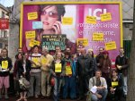
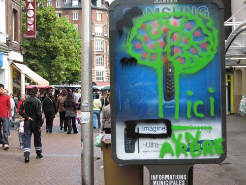

|
Accueil du site > Rouen > Compte-rendu du barbouillage à Rouen le 23 juin 2007
Compte-rendu du barbouillage à Rouen le 23 juin 2007
Article publié le dimanche 1er juillet 2007
|

|
Ami(e)
Les Normands disent que Rouen est le pot de chambre de la Normandie, tellement il y pleut ! Malgré plusieurs courtes averses, ce samedi 23 juin, à Rouen :
45 militants se sont retrouvés pour l’action dans le quartier piétonnier de St Sever.
Le Collectif des déboulonneurs, comme cela était prévu, a :
 barbouillé un obstacle urbain, " Ici un arbre", assorti d’un joli dessin d’un arbre. C’était en face du magasin Tati ; barbouillé un obstacle urbain, " Ici un arbre", assorti d’un joli dessin d’un arbre. C’était en face du magasin Tati ;
enrubanné de papier journal un autre obstacle urbain, puis il fut écrit dessus deux slogans antipub ;
recouvert deux autres obstacles urbains avec des calicots, joyeusement peints sur place de dessins et graffitis antibub ;
décoré un panneau 4 x 3 illégal, pour SFR, à côté d’un marchand de téléphones portables du même nom, avec des slogans "Allo, chéri, je suis sur un panneau illégal" ; "pub = pollution visuelle", " Ce panneau est illégal. Loi de 1979", etc.
réalisé de la démocratie participative en faisant que passants et militants ont réalisé des dessins et collé des visuels A4 jaunes antipub à connotation pédagogique contre l’invasion publicitaire sur des abribus avec affiches vantant une marque de voitures ;
distribué 800 tracts aux passants, particulièrement réceptifs au recouvrement des obstacles urbains et au grand panneau illégal bien décoré. Ce tract - en plus de la revendication des déboulonneurs, à savoir le 50 x 70 cm - mentionnait notamment : "Le maire de Rouen n’a pas encore renoncé au projet de 200 vélos JCDecaux en libre service dans le seul centre ville, en échange de 300 m2 de pub supplémentaire dans la ville. Aidons-le à comprendre que la population en a assez de la pub partout, et qu’il existe un projet alternatif plus efficace pour désengorger le centre ville, avec 2000 vélos pour toute l’agglomération, sans contrepartie en pub ! Pourquoi ne pas s’inspirer de ce qui se passe déjà à Toulouse où le vélo pour tous roule très bien, grâce, non à un afficheur, mais à une association d’économie sociale qui a créé des emplois pour personnes en réinsertion ?" Ce projet alternatif est soutenu à Rouen par Les Verts et bon nombre d’associations et aussi le Collectif des déboulonneurs.

3 cars de police sont passés à proximité, mais ce n’était pas pour nous !
Grosse déception : seule une journaliste de France Bleue a couvert l’action. Paris Normandie et France3 ne sont pas venus à cause du mauvais temps.
25 militants se sont ensuite offerts un pique-nique dans un square tout proche. Très sympa. Bilan réalisé à chaud. Satisfaction générale. Une quinzaine de personnes sur 25 se sont déclarées intéressées pour vivre ensemble une journée de formation à la rentrée (barbouillage, recouvrement, attitude face à la police, ...)
Les photos de cette action
|